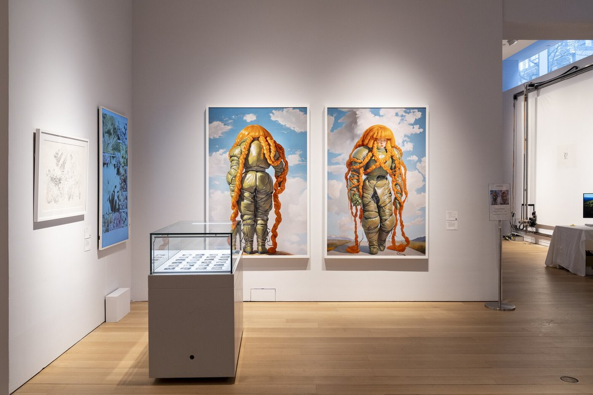
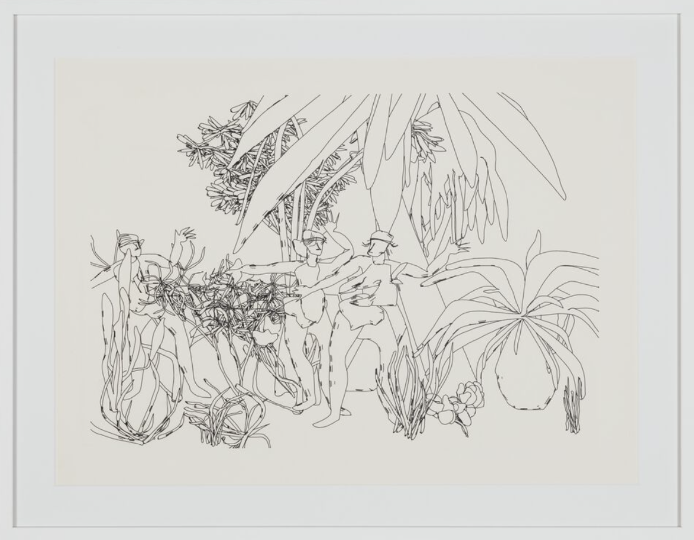
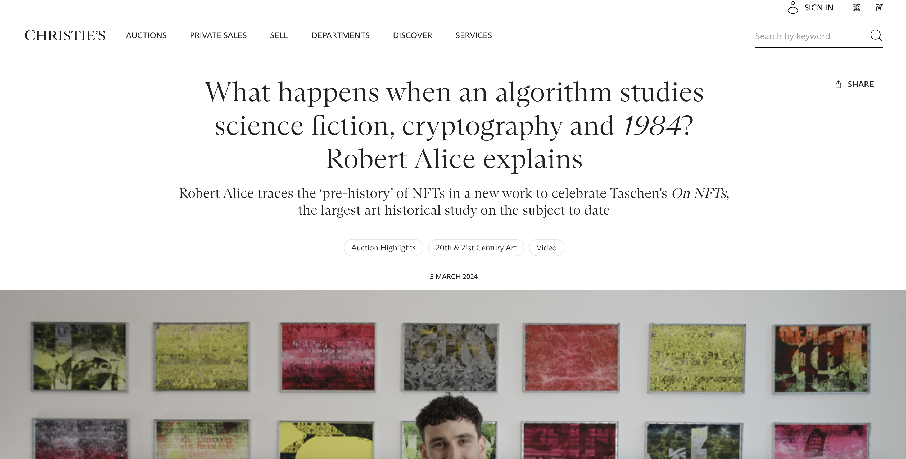
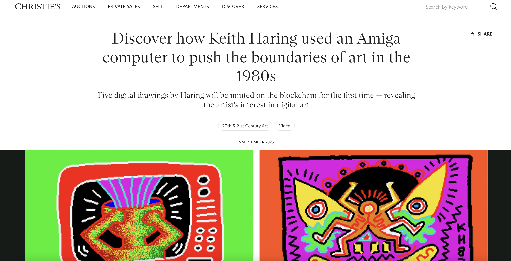
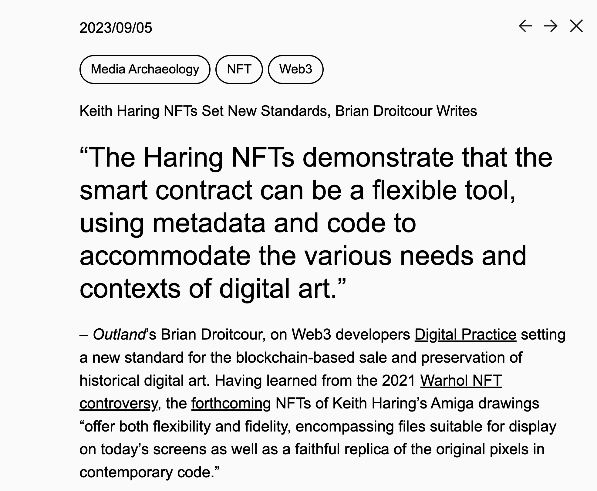
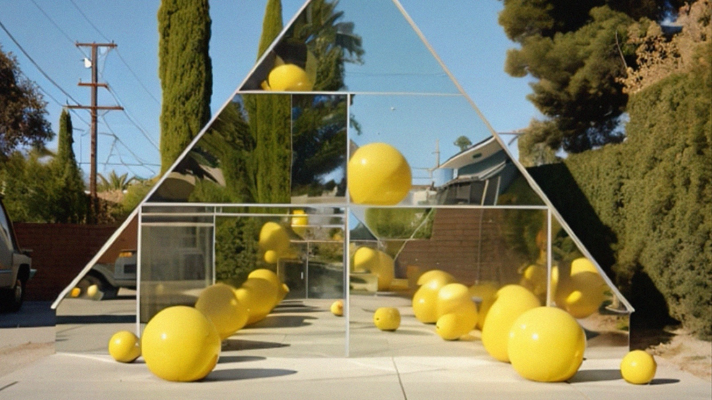
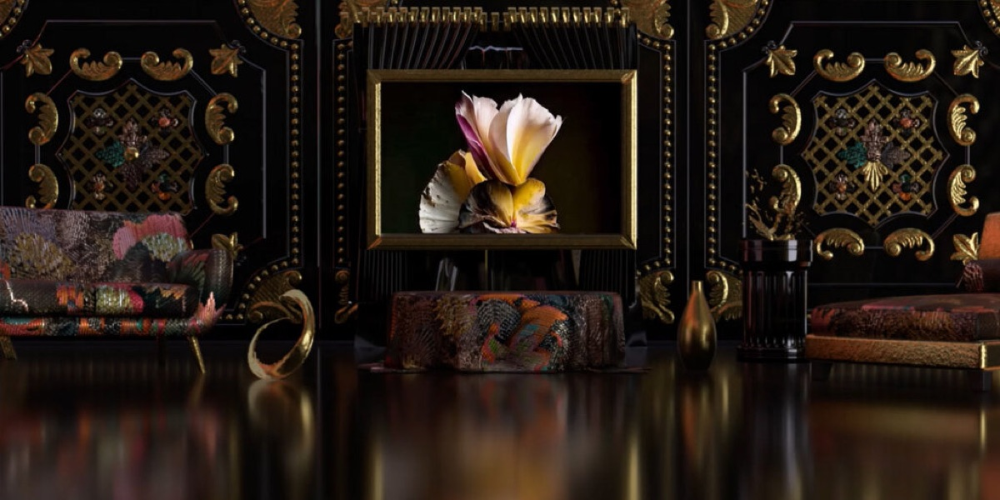
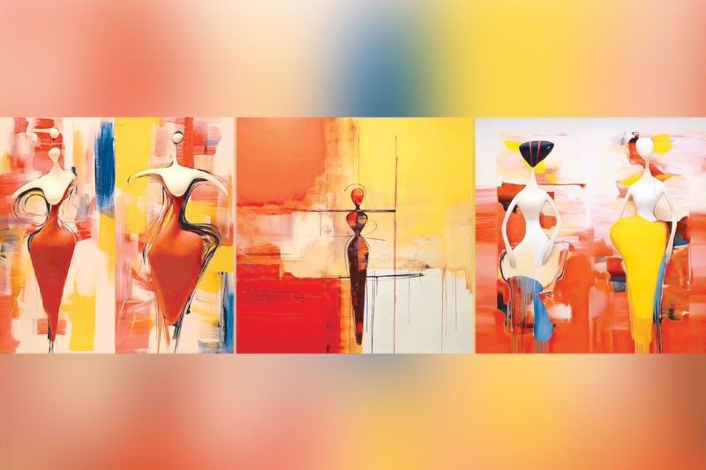

Work




















- A Goal in Life: Leo Messi x Refik Anadol, sold for $1.87M at Christie's
- Augmented Intelligence, Christie's first AI art auction, over $800,000
- Holly Herndon & Mat Dryhurst, Refik Anadol, Sasha Stiles, Harold Cohen
- Keith Haring: Pixel Pioneer, five Amiga drawings, $1,587,600
- Ascend, Koopmans & Wexell: first Bitcoin Ordinal sold live at Christie's, £44,100
- Future Frequencies: Christie's x Gucci, generative art and fashion
- Robert Alice generative drop: Christie's first Dutch auction minted on-chain
- On NFTs, exhibition and publication with TASCHEN
- Artist collaborations with Cindy Sherman, Barbara Kruger, Rashid Johnson, Robert Longo
- Entangled Others commission at Kunstsilo, Kristiansand
- The New York Times: Digital artwork of Lionel Messi's favorite goal sold for $1.87M
- Associated Press: Live Messi's favorite goal, an immersive AI art installation
- NY1: Inside the brain of Lionel Messi through art
- Christie's Magazine: What is AI Art
- nss magazine: AI Art, Revolution or Threat?
- The Art Newspaper: From ordinals to ownership
- Artnet News: Christie's Is Still Betting on NFTs
- Christie's Magazine: Specialists Speak, trends for 2024
- NFT Now: Digital Art Takes Center Stage
- Decrypt: Gucci's Iconic Fashion Reimagined at Christie's
- Vogue Business: New Gucci NFTs combine fashion and art
- WWD: Christie's, Gucci Explore Generative Art and Fashion
- CoinDesk: Beyond the JPEG
- Understanding the Digital Art Ecosystem, Columbia University
- The Evolution of Art Collecting: Digital Ownership, Riga Contemporary
- How Digital Art Is Changing the Art World, Columbia University
- The Evolution of Collecting: Digital Ownership, Signal on Sale, Seoul
- Guest Art Critic, NYU ITP
- AI in Art, Niagara University & Castellani Art Museum
- The Business of Digital Art, Christie's Education
- What is a Digital Art Specialist?, Parsons
- From Canvas to Code, Harvard Blockchain Conference
- Web3 Collectors Salon, Artists Rights Society
- Generative Art Today, Proof of People
- Artist, Collector, Specialist, The Gateway Miami
- Launch of SOURCE [On NFTs] x TASCHEN, Christie's New York
- Digital Art Post Boom, Le Random podcast
- Future Frequencies with Claire Silver & Emi Kusano, Gucci Podcast
- Future Frequencies: DAOs & the Artist Botto, Gucci Podcast
- A Comprehensive Guide to Digital Art, Context by Boys Club